Environment Setup
Introduction
So to start of we'll quickly setup our environment so we can test Javascripts console output. Although if you already have a place you can access the javascript console output from, then you can skip this step, but if you don't already have one just use any of the remommended options below, they are arrange from most to least recommended, but they are all great and okay for this.
Google Chrome
To use the Google Chrome Developer Tool you will need to have a version of the Chrome Browser set up, so if you don't have the browser installed simply go here to download and install it, once you're done installing it, simply launch the browser and follow the steps below.
Step 1
Click on the ellipsis icon at the top right corner of your browser, this should display a menu.
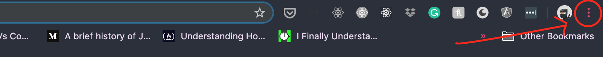
Step 2
Click on More Tools on the displayed menu option, this should display another menu.
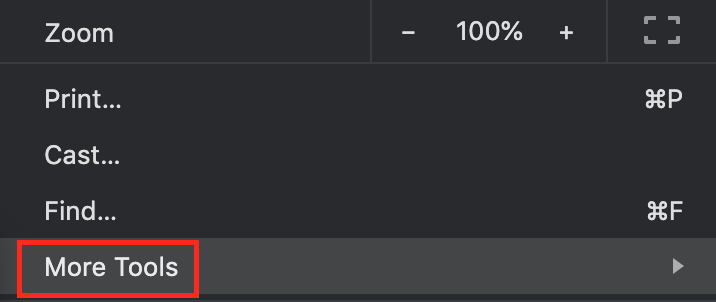
Step 3
Click on Developer Tools on the More Tools menu.
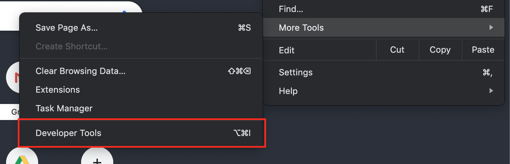
NB: To do this faster simply use the keyboard shortcut diplayed beside the Developer Tools option, in the case of othe image above it is ⌥ ⌘ i which can also be alt + cmd + i.
Step 4
Click on the Console tab when the developer tools display on your browser.
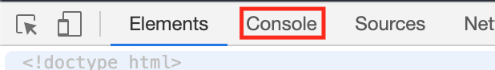
Step 5
Once opened you should be able to execute Javascript code from here.
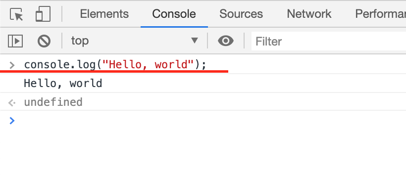
Mozilla Firefox
To use the Mozilla Firefox Developer Tool you will need to have a version of the Firefox Browser set up, so if you don't have the browser installed simply go here to download and install it, once you're done installing it, simply launch the browser and follow the steps below.
Step 1
Click on the hamburger icon at the top right corner of your browser, this should display a menu.
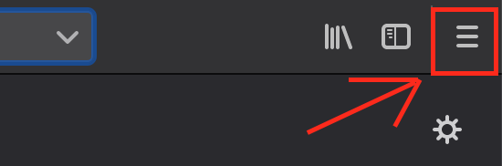
Step 2
Click on Web Developer on the displayed menu option, this should display another menu.
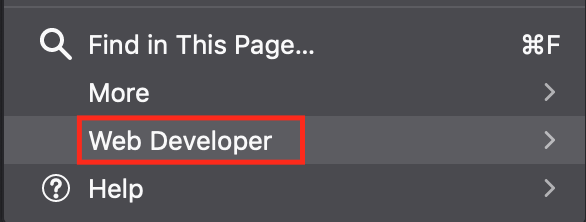
Step 3
Click on Web Console on the Web Developer menu.
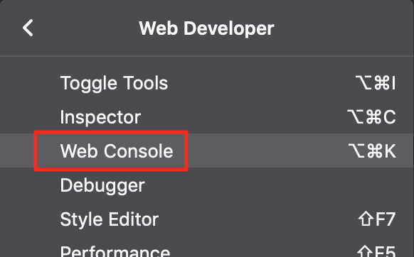
NB: To do this faster simply use the keyboard shortcut diplayed beside the Web Console option, in the case of othe image above it is ⌥ ⌘ k which can also be alt + cmd + k.
Step 4
Once opened you should be able to execute Javascript code from here.
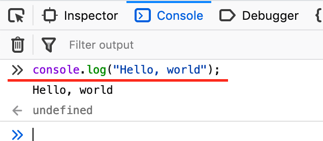
You can see we logged Hello, world! in the console on the image above.
Repl
Repl is an online text editor for writting code, so in this step you're not required to have any specific browser, you will only need to be online in order to write and test your code. Sto start using Repl, you will need to have an account and be logged in on Repl so head over to repl and sign up or log into your account. Once you've logged in simply follow the steps below to start writing and testing Javascript code.
Step 1
Click on the new repl + button at the top of the page, this should display a modal.
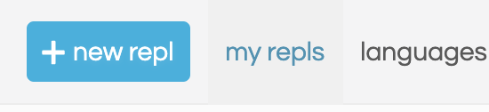
Step 2
Search and click on Javascript on the displayed modal.
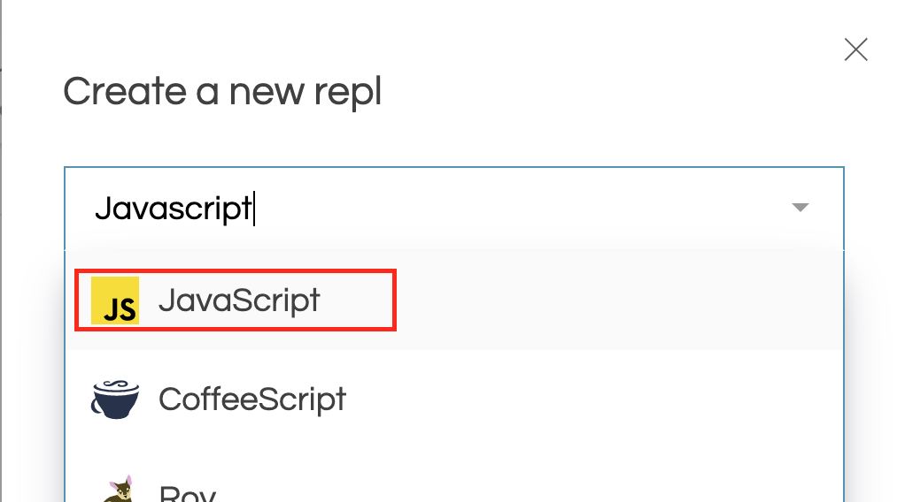
Step 3
Click on the Create repl button at the bottom of the displayed modal and wait for the page to redirect you to the text editor.
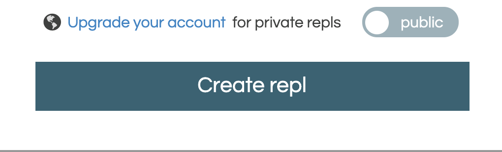
Step 4
Once opened you should be able to execute Javascript code from here. The two places you should be concerned with right now are, the code playground(input) and the console(output), the code playground is where you will write your code, and the console is where you will see the result of your code.
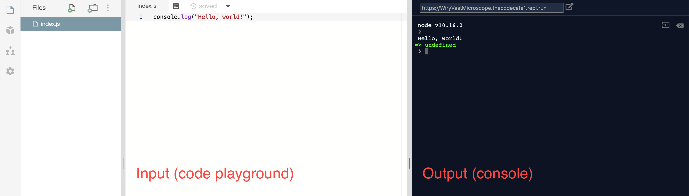
You can see we logged Hello, world! in the image above.
NB: You will need to click on the Run button at the top of the page to execute your code in the code playground.
Finally
Alright so at this point we should have our environments ready, you can go ahead and familiarise yourself with any of the environments you chose out of the three.